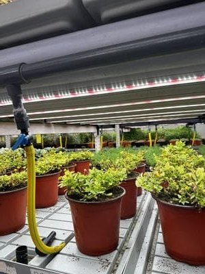
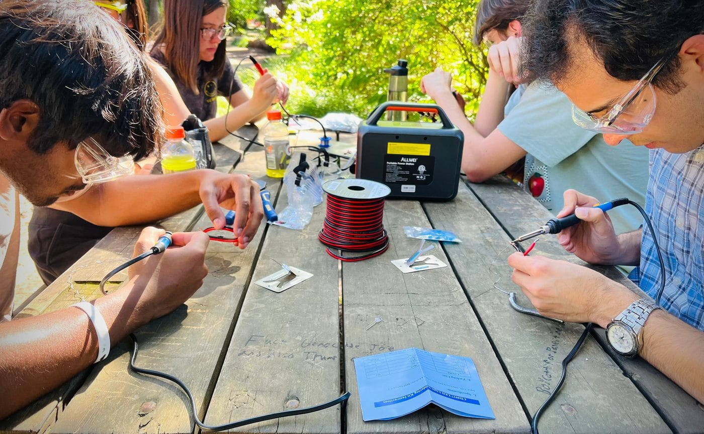

UC Davis field infrastructure
FieldWorks is grounded in student-farm sensor, irrigation, and practical data workflows.
Ferdant Co. | FieldWorks
Field-data usefulness, QA, and regulatory assembly scopes for farms, districts, advisors, and research sites that need trusted operational evidence.
Welcome
Ferdant works on the gap between field data being collected and field data becoming a usable decision, record, report, or operational handoff.
The first offer is a bounded review of one workflow: what data exists, who relies on it, where QA or interpretation consumes staff time, and what should be kept, simplified, supported, or abandoned.

Field Data
Map one field-data workflow from source inventory to owner, user, decision, maintenance burden, and next support recommendation.
Records
Clarify the files, tabs, checks, owners, and handoffs behind a recurring nitrate, water, or farm-record packet.

Confidence
Find where teams still spend time on reconciliation, exports, exceptions, explanations, and confidence checks after the system works technically.
Proof Path
FieldWorks is grounded in student-farm sensor, irrigation, and practical data workflows.
The current question is where field data becomes trusted enough to change a decision, record, or support burden.
FieldWorks is built for places where conservation, water, farm records, and sensor-backed operations need clearer evidence handoffs.
Latest Focus
A short review that asks whether an existing data workflow is useful, trusted, and low-burden enough to keep using.
A concrete wedge around recurring nitrate or water-quality evidence assembly, with clear boundaries around official submissions.
FieldWorks is positioned around field evidence handoffs that can travel across farms, districts, advisors, and research operations.

Contact
For farms, districts, advisors, research sites, and technical teams with a real field-data, QA, or records burden.
hi@ferdant.com